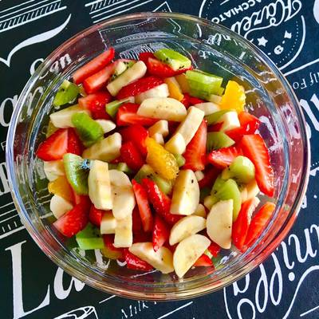

Ensalada de Frutas
Sumérgete en esta ensalada de frutas que combina fresas jugosas, uvas dulces, mango maduro y plátano fresco. El toque cítrico del jugo de limón realza los sabores naturales y la menta fresca le da un aroma irresistible.

Ingredientes:
2 tazas de sandía, cortada en cubos
1 taza de uvas, sin semillas y cortadas por la mitad
1 taza de piña, cortada en trozos
1 taza de fresas, cortadas en rodajas
1 plátano, cortado en rodajas
1 manzana, cortada en cubos
1 naranja, pelada y cortada en gajos
1 cucharada de jugo de limón
1 cucharada de miel (opcional)
Hojas de menta para decorar (opcional)
Pasos:
1.Lava y pela todas las frutas que necesiten ser peladas. Corta todas las frutas en trozos o rodajas del tamaño deseado.
2.En un tazón grande, mezcla las frutas cortadas.
3.Exprime el jugo de limón sobre la ensalada de frutas. Si deseas un toque de dulzura adicional, agrega la miel y mezcla bien para combinar los sabores.
4.Refrigera la ensalada de frutas durante al menos 30 minutos antes de servirla. Esto ayudará a que los sabores se mezclen y la ensalada se enfríe para que sea más refrescante.
5.Si lo deseas, decora la ensalada de frutas con hojas de menta justo antes de servir para agregar un toque de frescura.